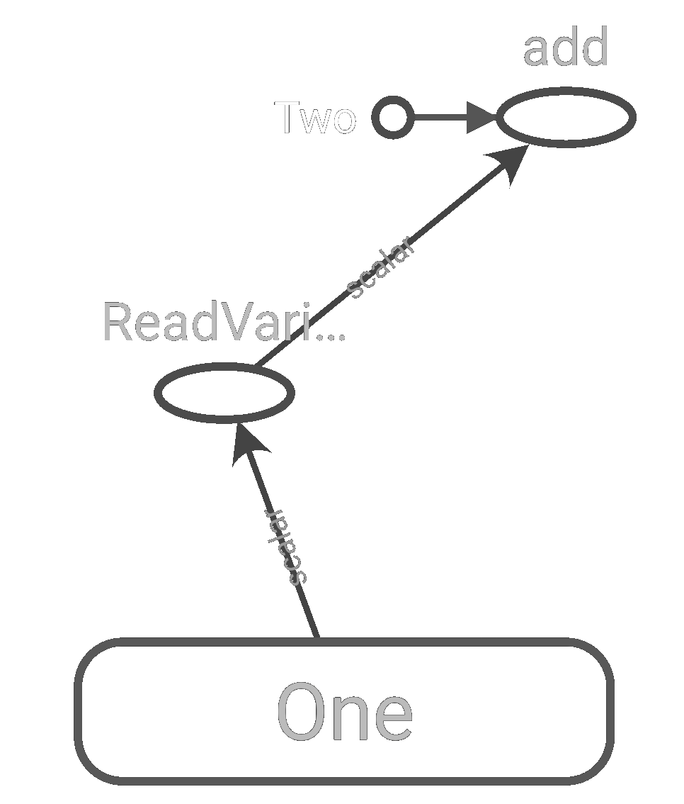
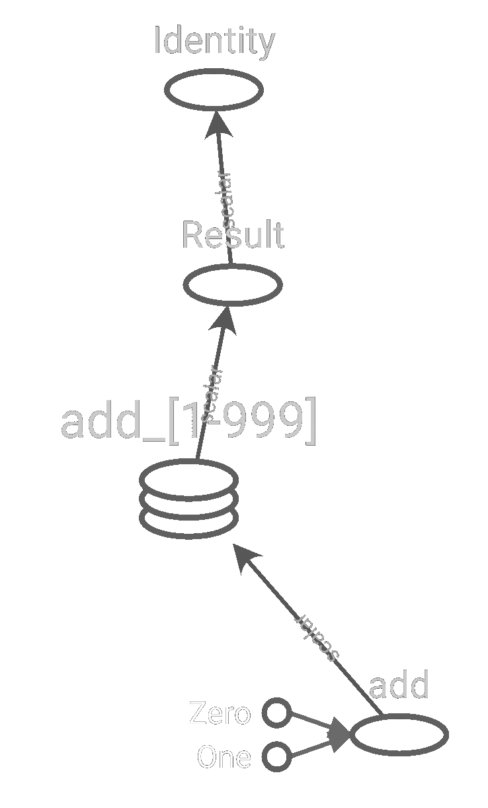

Custom Models and Training with Tensorflow
Roman ŽenkaHands-On Machine Learning
2nd edition
Chapter 12
Chapter summary
- Brief description of TensorFlow
- What is a tensor?
- Customize Keras - losses, activations, initializers, regularizers, constraints, metrics
- AutoDiff
- Custom training loop
- AutoGraph
Bottom-up approach
- Brief description of TensorFlow
- What is a tensor?
- AutoGraph
- AutoDiff
- Customize Keras - losses, activations, initializers, regularizers, constraints, metrics
- Custom training loop
What is TensorFlow?
git clone https://github.com/tensorflow/tensorflow.git
cd tensorflow/tensorflow
cloc .
25765 text files.
25330 unique files.
9377 files ignored.
---------------------------------------------------------------------------------------
Language files blank comment code
---------------------------------------------------------------------------------------
C++ 7166 275253 248081 1737711
Python 2829 167048 260840 664627
C/C++ Header 4034 95651 153605 358321
HTML 3 5501 29 249969
Bazel 720 12240 4493 171422
Markdown 588 14235 2 49073
Go 41 3743 30238 30562
Java 153 3972 7711 18824
Starlark 76 1676 2531 15398
Bourne Shell 220 2127 5080 8646
Protocol Buffers 179 3210 9080 8374
Pascal 9 1801 13475 7892
Objective-C++ 55 1192 816 5765
Jupyter Notebook 30 0 15082 3556
CMake 87 486 1513 3187
YAML 12 68 67 1563
JSON 18 18 0 1512
XML 66 350 591 1505
C 29 340 437 1419
Swift 18 242 586 1303
Objective-C 20 350 402 1226
DOS Batch 38 156 2 788
Gradle 7 58 46 319
Windows Module Definition 6 49 0 277
C# 2 75 38 272
Ruby 4 39 2 208
Bourne Again Shell 4 49 92 203
Perl 2 36 39 152
LLVM IR 1 14 4 123
Cython 2 36 11 120
INI 2 6 0 53
make 2 11 16 50
diff 2 2 36 22
Dockerfile 1 5 3 16
SVG 12 0 0 12
---------------------------------------------------------------------------------------
SUM: 16438 590039 754948 3344470
---------------------------------------------------------------------------------------
What is a tensor?
tensorflow/python/types/core.py
@tf_export("__internal__.types.Tensor", v1=[])
class Tensor(object):
"""The base class of all dense Tensor objects.
A dense tensor has a static data type (dtype), and may have a static rank and
shape. Tensor objects are immutable. Mutable objects may be backed by a Tensor
which holds the unique handle that identifies the mutable object.
"""
@property
def dtype(self):
pass
@property
def shape(self):
pass
Ragged Tensor
tensorflow/python/ops/ragged/ragged_tensor.py
@tf_export("RaggedTensor")
class RaggedTensor(composite_tensor.CompositeTensor,
internal_types.NativeObject):
"""
Internally, a `RaggedTensor` consists of a concatenated list of values that
are partitioned into variable-length rows. In particular, each `RaggedTensor`
consists of:
* A `values` tensor, which concatenates the variable-length rows into a
flattened list. For example, the `values` tensor for
`[[3, 1, 4, 1], [], [5, 9, 2], [6], []]` is `[3, 1, 4, 1, 5, 9, 2, 6]`.
* A `row_splits` vector, which indicates how those flattened values are
divided into rows. In particular, the values for row `rt[i]` are stored
in the slice `rt.values[rt.row_splits[i]:rt.row_splits[i+1]]`.
"""
Sparse Tensor
tensorflow/python/framework/sparse_tensor.py
"""
Concretely, the sparse tensor `SparseTensor(indices, values, dense_shape)`
comprises the following components, where `N` and `ndims` are the number
of values and number of dimensions in the `SparseTensor`, respectively:
* `indices`: A 2-D int64 tensor of shape `[N, ndims]`, which specifies the
indices of the elements in the sparse tensor that contain nonzero values
(elements are zero-indexed). For example, `indices=[[1,3], [2,4]]` specifies
that the elements with indexes of [1,3] and [2,4] have nonzero values.
* `values`: A 1-D tensor of any type and shape `[N]`, which supplies the
values for each element in `indices`. For example, given `indices=[[1,3],
[2,4]]`, the parameter `values=[18, 3.6]` specifies that element [1,3] of
the sparse tensor has a value of 18, and element [2,4] of the tensor has a
value of 3.6.
* `dense_shape`: A 1-D int64 tensor of shape `[ndims]`, which specifies the
dense_shape of the sparse tensor. Takes a list indicating the number of
elements in each dimension. For example, `dense_shape=[3,6]` specifies a
two-dimensional 3x6 tensor, `dense_shape=[2,3,4]` specifies a
three-dimensional 2x3x4 tensor, and `dense_shape=[9]` specifies a
one-dimensional tensor with 9 elements.
"""
Who inherits from tensor?
Tensor 'tensorflow.python.types.core'
_LazyEvalTensor 'tensorflow.python.ops.variable_scope'
RefVariable 'tensorflow.python.ops.variables'
BaseResourceVariable 'tensorflow.python.ops.resource_variable_ops'
ResourceVariable 'tensorflow.python.ops.resource_variable_ops'
UninitializedVariable 'tensorflow.python.ops.resource_variable_ops'
UnliftedInitializerVariable 'tensorflow.python.eager.def_function'
_UnreadVariable 'tensorflow.python.ops.resource_variable_ops'
AggregatingVariable 'tensorflow.python.distribute.ps_values'
# CachingVariable 'tensorflow.python.distribute.ps_values'
# PackedDistributedVariable 'tensorflow.python.distribute.packed_distributed_variable'
# DistributedVariable 'tensorflow.python.distribute.values_v2'
# ParallelVariable 'tensorflow.python.distribute.parallel_device.saving'
AutoCastVariable 'tensorflow.python.keras.mixed_precision.autocast_variable'
AutoCastDistributedVariable 'tensorflow.python.keras.mixed_precision.autocast_variable'
Symbol 'tensorflow.python.types.core'
Value 'tensorflow.python.types.core'
Tensor 'tensorflow.python.framework.ops'
CheckpointInitialValue 'tensorflow.python.training.tracking.base'
_EagerTensorBase 'tensorflow.python.framework.ops'
# DistributedVariable 'tensorflow.python.distribute.values'
# MirroredVariable 'tensorflow.python.distribute.values'
# TPUMirroredVariable 'tensorflow.python.distribute.tpu_values'
# SyncOnReadVariable 'tensorflow.python.distribute.values'
# TPUSyncOnReadVariable 'tensorflow.python.distribute.tpu_values'
# TPUDistributedVariable 'tensorflow.python.distribute.tpu_values'
# AggregatingVariable 'tensorflow.python.distribute.ps_values'
# CachingVariable 'tensorflow.python.distribute.ps_values'
Tensor as a result of an operation
tensorflow/python/framework/ops.py
@tf_export("Tensor", "experimental.numpy.ndarray", v1=["Tensor"])
class Tensor(internal.NativeObject, core_tf_types.Tensor):
def __init__(self, op, value_index, dtype):
"""Creates a new `Tensor`.
Args:
op: An `Operation`. `Operation` that computes this tensor.
value_index: An `int`. Index of the operation's endpoint that produces
this tensor.
dtype: A `DType`. Type of elements stored in this tensor.
Raises:
TypeError: If the op is not an `Operation`.
"""
if not isinstance(op, Operation):
raise TypeError("op needs to be an Operation: %s" % (op,))
self._op = op
self._value_index = value_index
self._dtype = dtypes.as_dtype(dtype)
# This will be set by self._as_tf_output().
self._tf_output = None
# This will be set by self.shape().
self._shape_val = None
# List of operations that use this Tensor as input. We maintain this list
# to easily navigate a computation graph.
self._consumers = []
self._id = uid()
self._name = None
Operation
tensorflow/python/framework/ops.py
@tf_export("Operation")
class Operation(object):
"""Represents a graph node that performs computation on tensors.
An `Operation` is a node in a `tf.Graph` that takes zero or more `Tensor`
objects as input, and produces zero or more `Tensor` objects as output.
Objects of type `Operation` are created by calling a Python op constructor
(such as `tf.matmul`) within a `tf.function` or under a `tf.Graph.as_default`
context manager.
For example, within a `tf.function`, `c = tf.matmul(a, b)` creates an
`Operation` of type "MatMul" that takes tensors `a` and `b` as input, and
produces `c` as output.
If a `tf.compat.v1.Session` is used, an `Operation` of a `tf.Graph` can be
executed by passing it to `tf.Session.run`. `op.run()` is a shortcut for
calling `tf.compat.v1.get_default_session().run(op)`.
"""
def __init__(self,
node_def,
g,
inputs=None,
output_types=None,
control_inputs=None,
input_types=None,
original_op=None,
op_def=None):
r"""Creates an `Operation`.
NOTE: This constructor validates the name of the `Operation` (passed
as `node_def.name`). Valid `Operation` names match the following
regular expression:
[A-Za-z0-9.][A-Za-z0-9_.\\-/]*
Args:
node_def: `node_def_pb2.NodeDef`. `NodeDef` for the `Operation`. Used for
attributes of `node_def_pb2.NodeDef`, typically `name`, `op`, and
`device`. The `input` attribute is irrelevant here as it will be
computed when generating the model.
g: `Graph`. The parent graph.
inputs: list of `Tensor` objects. The inputs to this `Operation`.
output_types: list of `DType` objects. List of the types of the `Tensors`
computed by this operation. The length of this list indicates the
number of output endpoints of the `Operation`.
control_inputs: list of operations or tensors from which to have a control
dependency.
input_types: List of `DType` objects representing the types of the tensors
accepted by the `Operation`. By default uses `[x.dtype.base_dtype for x
in inputs]`. Operations that expect reference-typed inputs must specify
these explicitly.
original_op: Optional. Used to associate the new `Operation` with an
existing `Operation` (for example, a replica with the op that was
replicated).
op_def: Optional. The `op_def_pb2.OpDef` proto that describes the op type
that this `Operation` represents.
"""
Graph
g = tf.Graph()
with g.as_default():
a = tf.constant(1.0, name="One")
b = tf.constant(2.0, name="Two")
c = a + b
d = c * b
writer = tf.summary.create_file_writer('logs')
with writer.as_default():
tf.summary.graph(g)
writer.flush()
%load_ext tensorboard
%tensorboard --logdir logs

How is this possible?
@tf_export("constant", v1=[])
def constant(value, dtype=None, shape=None, name="Const"):
return _constant_impl(value, dtype, shape, name, verify_shape=False,
allow_broadcast=True)
def _constant_impl(value, dtype, shape, name, verify_shape, allow_broadcast):
"""Implementation of constant."""
ctx = context.context()
if ctx.executing_eagerly():
if trace.enabled:
with trace.Trace("tf.constant"):
return _constant_eager_impl(ctx, value, dtype, shape, verify_shape)
return _constant_eager_impl(ctx, value, dtype, shape, verify_shape)
g = ops.get_default_graph()
tensor_value = attr_value_pb2.AttrValue()
tensor_value.tensor.CopyFrom(
tensor_util.make_tensor_proto(
value, dtype=dtype, shape=shape, verify_shape=verify_shape,
allow_broadcast=allow_broadcast))
dtype_value = attr_value_pb2.AttrValue(type=tensor_value.tensor.dtype)
attrs = {"value": tensor_value, "dtype": dtype_value}
const_tensor = g._create_op_internal( # pylint: disable=protected-access
"Const", [], [dtype_value.type], attrs=attrs, name=name).outputs[0]
if op_callbacks.should_invoke_op_callbacks():
# TODO(b/147670703): Once the special-op creation code paths
# are unified. Remove this `if` block.
callback_outputs = op_callbacks.invoke_op_callbacks(
"Const", tuple(), attrs, (const_tensor,), op_name=name, graph=g)
if callback_outputs is not None:
const_tensor, = callback_outputs
return const_tensor
+ ?
tensorflow/python/ops/gen_math_ops.py
def add_v2(x, y, name=None):
_ctx = _context._context or _context.context()
tld = _ctx._thread_local_data
if tld.is_eager:
try:
_result = pywrap_tfe.TFE_Py_FastPathExecute(
_ctx, "AddV2", name, x, y)
return _result
except _core._NotOkStatusException as e:
_ops.raise_from_not_ok_status(e, name)
except _core._FallbackException:
pass
try:
return add_v2_eager_fallback(
x, y, name=name, ctx=_ctx)
except _core._SymbolicException:
pass # Add nodes to the TensorFlow graph.
# Add nodes to the TensorFlow graph.
_, _, _op, _outputs = _op_def_library._apply_op_helper(
"AddV2", x=x, y=y, name=name)
_result = _outputs[:]
if _execute.must_record_gradient():
_attrs = ("T", _op._get_attr_type("T"))
_inputs_flat = _op.inputs
_execute.record_gradient(
"AddV2", _inputs_flat, _attrs, _result)
_result, = _result
return _result
Variable
g = tf.Graph()
with g.as_default():
a = tf.Variable(1.0, name="One")
b = tf.constant(2.0, name="Two")
c = a + b

Variable assignment 💀
g = tf.Graph()
with g.as_default():
a = tf.Variable(0.0, name="A")
before = tf.identity(a, name="Before")
c = tf.constant(1.0, name="One")
a = a.assign(c)
after = tf.identity(a, name="After")
Variable assignment 🦄🌈
a = tf.Variable(0.0, name="A")
@tf.function # 🦄🌈
def test(a):
before = tf.identity(a, name="Before")
c = tf.constant(1.0, name="One")
a.assign(c)
after = tf.identity(a, name="After")
f = test.get_concrete_function(a)
f.graph
Tracing
@tf.function
def test(n):
a = tf.constant(0.0, name="Zero")
delta = tf.constant(1.0, name="One")
for i in range(n):
a = a + delta
return tf.identity(a, name="Result")
f = test.get_concrete_function(4)
f.graph
Tracing
@tf.function
def test(n):
a = tf.constant(0.0, name="Zero")
delta = tf.constant(1.0, name="One")
for i in range(n):
a = a + delta
return tf.identity(a, name="Result")
f = test.get_concrete_function(1000)
f.graph

tf.range
@tf.function
def test(n):
a = tf.constant(0.0, name="Zero")
delta = tf.constant(1.0, name="One")
for i in tf.range(n):
a = a + delta
return tf.identity(a, name="Result")
f = test.get_concrete_function(1000)
f.graph
Optimization
@tf.function
def test(n, a):
for i in range(n):
a = a + i
return tf.identity(a, name="Result")
g = test.get_concrete_function(5, tf.Variable(0.0)).graph
def constfold(graphdef, output_name):
graph = tf.Graph()
with graph.as_default():
outputs = output_name.split(',')
output_collection = meta_graph_pb2.CollectionDef()
output_list = output_collection.node_list.value
for output in outputs:
output_list.append(output)
importer.import_graph_def(graphdef, name="")
metagraph = saver.export_meta_graph(
graph_def=graph.as_graph_def(add_shapes=True), graph=graph)
metagraph.collection_def["train_op"].CopyFrom(output_collection)
rewriter_config = rewriter_config_pb2.RewriterConfig()
rewriter_config.optimizers.extend(["constfold"])
rewriter_config.meta_optimizer_iterations = rewriter_config_pb2.RewriterConfig.ONE
session_config = config_pb2.ConfigProto()
session_config.graph_options.rewrite_options.CopyFrom(rewriter_config)
return tf_optimizer.OptimizeGraph(session_config, metagraph)
Constant folding
AutoDiff
def f(x):
return x ** tf.constant(2.0, name="Two")
@tf.function
def dy_dx(x):
with tf.GradientTape() as tape:
y = f(x)
return tape.gradient(y, x)
x = tf.Variable(1.0, name="One")
g = dy_dx.get_concrete_function(x).graph